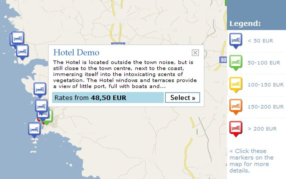

Google Maps support
Octabytes CRS supports dynamic Google maps with price categories shown in different colors. Cross selling can be configured to operate via Google maps in real-time thus showing exact locations and distances between offered accommodation facilities.

OpenTravel Compliant XML gateways
Octabytes CRS data access is provided by a powerful server architecture and is based on the OTA data standard (Open Travel Alliance) which means standardized data exchange in electronic distribution systems. The combination of XML based architecture, advanced customer-centric features and unrivalled flexibility provides a platform to grow your business and adapt quickly to changing market requirements.
2 way OTA standards based data exchange is applied for connecting Octabytes CRS channel manager to the biggest booking portals of the industry. The ADS sites physically connected to Octabytes CRS are Booking.com, Expedia.com, Hotels.com, Venere.com and others. New partners are connected continuously.
XML LINK TO LOCAL PMS
Octabytes CRS can link to any local PMS either by one-way or two-way link. This link enables online reservations to land directly to hotels local PMS. The system supports all leading hotel PMS available today. Any PMS system with OTA XML interface layer can be adapted to communicate with Octabytes CRS booking engine. Either a "push" or "pull" implementation to your local Property Management System is available. The PMS connection is an optional feature, subject to a separate agreement with the developer of particular local PMS.
XML LINK TO YOUR LOCAL BANK
No more forgetting to manually update your alternative currency rates. Configure local tax management and exchange rates to ensure your rates are always up to date. Octabytes CRS will supply you with updated, live currency rates via your bank live XML feed. The system connects to local banks for real-time exchange rates, so the clients can shop in their own currency. The system supports endless XML connections to your banks, for multi-use at large hotel chains. Each property, at any location, can view and work with its local bank rates.
All in one modular architecture
Octabytes CRS is build as a Module System, but there is no module which has extra cost! The modular structure allows you to have all features at your disposal, you can switch any module ON or OFF, but we will never charge for any extra feature or any extra future capability. You will always get our engine updates for free.
« back to overview